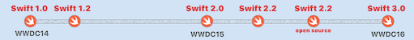

In 2014 introduceerde Apple met Swift een waardige opvolger voor de ontwikkeltaal die tot dan toe voor de ontwikkeling van iOS en macOS apps werd gebruikt: Objective-C. Het Swift team onder leiding van Chris Lattner heeft heel bewust gekozen voor een ontwikkeltaal die ervaren en beginnende ontwikkelaars dichter bij elkaar kan brengen. De leercurve voor het ontwikkelen van Swift apps (zowel iOS als macOS) is in vergelijking tot Objective-C minder steil. Swift verenigt de positieve aspecten van vele al langer bestaande talen in een platform waar kwaliteit, snelheid, kracht en veiligheid centraal staan. Met het initiatief om Swift open-source te maken is een nieuwe weg ingeslagen. Een aantal grote spelers als IBM, Google en kleinere initiatieven in Linux hebben al zichtbare initiatieven getoond die de innovatieve kracht van Swift onderstrepen. Daarbij wordt er vooral ingespeeld op de wereldwijde behoefte om de ontwikkeling van apps eenvoudiger en -bij voorkeur- een zinvolle extensie van onze levensstijl te maken.
Nu bijna twee jaar later heeft Swift zich ontwikkeld tot een groeiende, onder ontwikkelaars wereldwijd zéér populaire programmeertaal die op meerdere terreinen zijn meerwaarde aantoont. Bij de ontwikkeling van iOS en macOS apps is het programmeren van code een stuk eenvoudiger en effectiever geworden. Dit maakt dat de instroom van (aspirant) ontwikkelaars een sterk stijgende lijn laat zien. Enthousiaste ontwikkelaars die hun vooral (professionele) kennis en kunde willen koppelen aan de (nieuwe) mogelijkheden van mobiele apparaten haken nu aan. Met Swift vergt de ontwikkeling van doelgerichte apps minder grote investeringen, zeker wanneer deze apps in de nabije toekomst ook op meerdere platformen kunnen worden uitgerold.

Swift combineert snelle ontwikkel-cyclus met groeiende populariteit onder professionele ontwikkelaars
Na de introductie van Swift zag vrij snel versie 1.2 het levenslicht. Tijdens de WWDC van 2015 werd Swift 2.0 aangekondigd. Deze werd in oktober 2015 effectief ingevoerd. Op 3 december 2015 was de open source versie van Swift een feit. Nu werken Swift ontwikkelaars op alle platformen met versie 2.2. Het is te verwachten dat Swift 3.0 tijdens de Apple WWDC 2016 wordt aangekondigd. Achter de schermen zien we tijdens het programmeren in Swift 2.2 al meerdere wijzigingen die in versie 3.0 gemeengoed zullen worden. De verwachting is dat Swift 3.0 vanaf het najaar van 2016 zal worden ingevoerd. In twee jaar hebben we een enorme groei in de ontwikkeling van Swift kunnen ervaren, niet in de laatste plaats door de ambities en doortastendheid van het Swift ontwikkelteam en alle actieve ontwikkelaars die Swift vanaf het begin al een warm hart toedragen.
De snelle opkomst van Swift als vernieuwende (open-source) ontwikkeltaal zorgt voor een groeiende behoefte aan het verkrijgen en uitwisselen van kennis en ervaring op het gebied van Swift ontwikkelvaardigheden. Ook neemt de behoefte aan ‘native’ apps voor mobiele en desktop-, server- en web-toepassingen enorm toe. De uit kennisnood geboren mengvormen blijken in de praktijk maar al te vaak hun beoogde doel te missen. Met de WWDC 2016 voor de deur zullen nieuwe mogelijkheden voor het gebruik van Swift op alle beschikbare platformen aan de orde komen. Dit zal het met Swift ontwikkelen van platform-specifieke apps een volgende, inspirerende impuls geven. SwiftDev.nl gaat actieve app-ontwikkelaars alle mogelijkheden bieden hun 'droom' te verwezenlijken.
SwiftDev.nl: dé Nederlandstalige Swift gemeenschap als kenniscentrum
De geboorte van SwiftDev.nl is het gevolg van een spontaan, maar uiterst serieus initiatief. Omdat onze initiatiefnemers van mening zijn dat actieve kennisdeling en het uitwisselen van ideeën en oplossingen bij alle deelnemers een groeiend potentieel zal aanboren. Met SwiftDev.nl willen wij een vruchtbare basis leggen voor een organische gemeenschap van beginnende, gevorderde en ervaren ontwikkelaars die hun kennis en vaardigheden onderling actief willen uitbouwen. We willen vooral een open gemeenschap zijn waarin iedereen zich op zijn eigen niveau thuis kan voelen. Wij kiezen bewust voor ‘eenheid in verscheidenheid’. We willen iedereen optimaal laten profiteren van de groeiende uitwisseling van kennis en ervaring van de deelnemende leden. Met als grootste voordeel: alles in de Nederlandse taal.
Door de enorme diversiteit aan mogelijkheden en ondersteunde platformen is er voor eenieder wat van zijn/haar gading te vinden. Wij staan open voor initiatieven waarin leden in kleinere subgroepen specifieke toepassingen ontwikkelen voor specifieke vakgebieden en voor speciale doelgroepen.
Daarbij hebben wij een transparante structuur neergezet, waarin jij ieders ervaring als inspiratiebron voor jouw eigen ontwikkeling gaat inzetten. Wij zijn ervan overtuigd dat deze open houding ieder individueel initiatief op SwiftDev.nl en daarbuiten ten goede komt. Het is onze intentie om een waardevolle gemeenschappelijke kennisbron voor Swift en app-ontwikkeling in de Nederlandse taal samen te brengen. Met als uiteindelijk doel dat alle leden met heel veel plezier vorderingen maken in wat zij, individueel of als groep, doen.
Toen wij, twee maanden geleden [lente 2016, ed.], aan dit initiatief begonnen, konden ook wij niet in een glazen bol kijken. Immers, de uiteindelijke waarde van SwiftDev.nl zal afhangen van onze gemeenschappelijke inzet om de kwaliteit en saamhorigheid in alles wat we (zullen) doen te vergroten. Het is vooral de bedoeling dat ieder lid steeds meer plezier gaat beleven aan de door iedereen gedeelde kennis. Dit kunnen vragen zijn over Swift code, maar ook gaan over aspecten van app-ontwikkeling in de vorm van UI ontwerp, koppelingen met databases, etc. Je kunt ook vertellen over apps die nu al ontwikkeld worden of jouw ervaring delen over hoe je het effectiefst inspeelt op de behoeften van (potentiële) gebruikers. We doen dit omdat het zinvolle onderwerpen zijn waar veel ontwikkelaars regelmatig mee worstelen.
De voordelen van het ontwikkelen van software met Swift als programmeertaal zijn legio. Het is een moderne taal die meegroeit met de meest innovatieve ontwikkelingen in de markt. Je bent een ‘vroege vogel’, waardoor je een voorsprong hebt op anderen die zich pas later aansluiten. Swift ontwikkelaars kunnen hun opgedane ervaring in de nabije toekomst op meerdere terreinen gaan inzetten. Je leert de taal vanuit meerdere invalshoeken bekijken en toepassen waardoor het nooit saai hoeft te worden. Je kunt je aansluiten bij andere gelijkgestemden om een daadwerkelijke bijdrage te leveren aan een teamprestatie. Je kunt je carrière een andere wending geven of juist gaan doen wat je altijd al wilde: een zinvolle bijdrage aan jezelf of via apps aan anderen geven. Mensen zijn van nature briljant. Er moet alleen op de juiste manier aan hun kennis en vaardigheden geslepen worden om dat (voor jezelf én anderen) zichtbaar te maken.
In het afgelopen decennium hebben we ervaren dat onze manier van samenleven enorm is veranderd. Het gebruik van mobiele apparaten, internet en het uitwisselen van allerhande informatie vormt een essentieel deel van onze hedendaagse werkelijkheid. Daarmee wordt het ontwikkelen van innovatieve én effectief ondersteuning gevende apps die voor hun gebruikers ‘het verschil’ maken steeds belangrijker. Apps ontwikkelen is een inspirerend creatief proces waarin de waarde zit in alle mensen die bij dat proces betrokken zijn.
Wij hebben bij het ontstaan van SwiftDev.nl aan den lijve ondervonden dat er heel veel mensen met de allerbeste intenties zijn die hun ‘droom voor het bouwen van een app’ hebben moeten laten varen omdat ze zich onvoldoende kunnen ontwikkelen tot succesvolle app-ontwikkelaars. Vreemd genoeg is de oorzaak van hun afhaken nooit hun persoonlijke inzet, tekort aan intelligentie en doorzettingsvermogen. De meest voorkomende reden waarom zij hun handdoek in de ring gooien is omdat zij onvoldoende vooruitgang en ondersteuning ervaren. Hun nog te gebrekkige kennis zorgt ervoor dat ze steeds weer hetzelfde wiel proberen uit te vinden. Omdat wat zij doen hen steeds maar niet verder helpt. Hiervoor is een mooie uitdrukking: “Wie altijd doet wat hij/zij altijd heeft gedaan, zal altijd krijgen wat hij/zij altijd gehad heeft!”. Wie blijvende vooruitgang wil boeken, zal zich bewust moeten zijn van jouw eigen aandeel in jouw eigen ontwikkeling. Een juiste mate van daadkracht, heldere doelen en open staan voor samenwerking met jezelf én anderen blijkt je eigen ontwikkeling en het bereiken van ieders doelen enorm te beïnvloeden.
Misschien herken je je in de volgende situatie: je staat in een enorme bibliotheek en zoekt een boek wat jouw leven kan verrijken. Als je helemaal alleen zoekt, ben je snel de kluts kwijt. Een medewerker van de bibliotheek vragen kan je op weg helpen, veronderstelt dat je hem of haar goed kunt uitleggen wat je exact zoekt. Weet je niet waar je nu moet beginnen, dan kan jouw deelname aan SwiftDev.nl je op weg helpen. Door alle kennis en kunde over Swift en het ontwikkelen van apps voor meerdere platformen openbaar toegankelijk te maken, sta je er niet meer alleen voor. Je kunt te rade gaan bij anderen die jouw ‘weg’ uit eigen ervaring al kennen en je een weg kunnen wijzen die je daar brengt waar je wilt zijn: het met toenemend plezier aan het ontwikkelen van je (eigen) app werken. Want zelfstandig of met anderen succesvol een app ontwikkelen geeft ontzettend veel voldoening. Naarmate je zelf deskundiger wordt kun jij weer anderen helpen. Zo kan iedereen op zijn eigen manier, in zijn eigen tempo en eigen leerstijl tot het gewenste resultaat komen. Met SwiftDev.nl kun je altijd terugvallen op oplossingen die anderen al voor jouw ‘problemen’ bedacht hebben, hulp vragen als je even vastloopt, een buddy vinden waarmee je kunt sparren en zo elkaar verder kunt helpen, elkaar virtueel ontmoeten via Zoom, Skype of TeamViewer. Op deze manier ‘samen-werken’ is niet alleen leuk en leerzaam, maar kan je in korte tijd ook door het eerder genoemde voor jezelf gecreëerde mijnenveld (“alles zelf doen”) heen loodsen.
Binnen SwiftDev.nl willen wij beginnende, gevorderde en ervaren Swift ontwikkelaars met elkaar verbinden, zodat zij er -als lid- nooit en te nimmer meer alleen voor staan. Onze voertaal is, behoudens de Swift code, Nederlands. Dit is een bewuste keuze, omdat we gemerkt hebben dat niet iedereen de Engelse taal voldoende machtig is om de soms zeer complexe onderliggende concepten te begrijpen. Het op SwiftDev.nl samenbrengen van enthousiaste en leergierige ontwikkelaars bundelt de creatieve kracht die we vanaf nu samen (gaan) ontwikkelen. Je zult merken dat het delen van (nog niet) effectief werkende code én ieders kennis en kunde op het gebied van app-ontwikkeling voor alle leden van onschatbare waarde is. Ook bij het ontwikkelen met Swift geldt: oefening baart kunst. In het bijzijn en met hulp van ervaringsdeskundigen kom je altijd waar je moet zijn.
De markt voor apps is in de afgelopen jaren steeds meer volwassen geworden. Eerlijkheid gebiedt wel te zeggen dat, ondanks de gevestigde publieke opinie, het niet allemaal goud is dat overal ‘blinkt’. Ontwikkelaars zijn veelal hardwerkende mensen met een heldere passie. Soms ligt die passie bij het ontwikkelen zelf, maar veel vaker wil men zelf verworven kennis en kunde via apps aan anderen beschikbaar maken. Vooral in de zakelijke markt is er veel behoefte aan deskundige ontwikkelaars die innovatieve verbeteringsslagen teweeg kunnen brengen. Het feit dat Swift een open-source ontwikkeltaal is maakt dat je jouw inspanningen op meerdere platformen kunt inzetten.
Ook in de app economie gelden de traditionele wetten van vraag en aanbod. Ofschoon er meerdere kanalen zijn om je apps onder de aandacht te brengen én te verkopen, moet je wel gedegen inzicht hebben in de behoeften van je gebruikers. De werking en kwaliteit van jouw apps kan voor hen het verschil maken. Zinvolle, duurzaam gebruikte apps ontketenen bij vele ontwikkelaars de enorme inspiratie om het verschil te maken. Tevreden gebruikers zijn uiteindelijk je beste “proeve van kunnen”, die bij betaalde apps voor jou ook de kassa laten rinkelen.
Voordat jij je app(s) via de verschillende App Stores, via je eigen websites kunt verkopen of voor intern gebruik kunt inzetten is er veel denk-, codeer- en testwerk te verrichten. Mocht het even tegen zitten dan kunnen je vrienden van SwiftDev.nl je net dat zetje in de goede richting geven dat je op dat moment mentaal, emotioneel of fysiek nodig hebt.
Potentiële opdrachtgevers willen vooral contact leggen met ontwikkelaars die hun eigen én andermans ideeën in effectief werkzame apps kunnen omzetten. SwiftDev.nl is in die zin een kweekvijver voor app-ontwikkelaars die zichzelf echt willen ontwikkelen. De ervaring leert dat het ontwikkelen en onderhouden van apps vele malen lastiger is dan het in de lucht brengen en houden van een website of serverpark. Kennis van zaken en ervaring in het effectief ontwikkelen (ontwerpen én programmeren) van apps, maken daar het beslissende verschil.
Als je overweegt om app-ontwikkelaar te worden, moet jij je zeer zeker niet blindstaren op de uitzonderlijke internationale successen van Angry Birds en anderen die (nog steeds) met grote krantenkoppen de media sieren. Goede en succesvolle ontwikkelaars verkiezen slimmer (samen)werken boven harder werken. De magie zit misschien wel in “meer in minder” waarbij jouw apps vooral excelleren in eenvoud. Het plezier van het samen iets goeds maken is in ons geval goud waard.
Goede apps bouwen vereist gedegen kennis vanuit het perspectief van gebruikers en/of opdrachtgevers. App-ontwikkelaars fungeren als bruggenbouwers die beide werelden via apps met elkaar verbinden. Daarom zullen wij, als programmeurs én ontwerpers, steeds over voldoende (diepgaande) kennis en actueel vakmanschap moeten beschikken om juist die apps te kunnen maken die voor iedereen het verschil maken. En, al doende leert men. Door opgedane kennis en ervaring met elkaar uit te wisselen vergroot jij niet alleen jouw kansen om steevast te groeien. Omdat deze app-markt volop in beweging is en goede Swift ontwikkelaars relatief schaars zijn, is er volop potentieel voor waardevolle groei. Nederlandse app-ontwikkelaars hebben in Europa in vele jaren een goede naam en reputatie opgebouwd. Adel verplicht in dit geval. Het is dus essentieel om deze positie in ieder geval te behouden en waar mogelijk gezamenlijk verder uit te bouwen.
Ook in deze markt geldt: “Wie het kleine niet eert, is het grote niet weert.”. De kwaliteit van apps is onlosmakelijk verbonden met onze betrokkenheid. Het gegeven dat een app eerst gekocht en daarna vooral veel gebruikt moet worden zijn essentieel voor ieder persoonlijk en zakelijk succes. App-ontwikkelaars moeten zich realiseren dat je zo goed bent als je laatste app. Deze markt vereist dat je voortdurend alert bent op de laatste ontwikkelingen in de markten waarin jij actief bent. Dat je vernieuwingen en verbeteringen in Swift en de platformen (iOS, macOS, watchOS, tvOS, Android, servers, Linux) waarvoor jij ontwikkelt op de voet volgt.
Omdat er veel van jou als ontwikkelaar wordt gevraagd kan het een geruststellend idee zijn te weten dat jij met SwiftDev.nl beschikt over een vangnet met allerlei meer én anders ervaren collega’s. Zij zijn zelf actief als ontwikkelaar en zullen jou -wanneer jij dat nodig hebt- met raad en daad willen bijstaan. De kracht van SwiftDev.nl zal zich openbaren in de actieve wederkerigheid van onze leden. Vooral door het feit dat Swift binnen afzienbare tijd als ontwikkeltaal op vele platformen actief is, ontstaat er een groeiende vraag naar Swift ontwikkelaars. Wij willen iedereen zo veel mogelijk kansen bieden een zinvolle bijdrage te leveren aan onze wederzijdse persoonlijke groei. Wij zien je graag veelvuldig terug met vragen en antwoorden voor jouw eerste tot en met jouw (of jullie) x-ste app.
Ben jij nieuwsgierig geworden naar de deskundigheid en het plezier dat wij met elkaar binnen SwiftDev.nl samenbrengen, lees dan verder op deze website of neem een kijkje op ons chatkanaal.